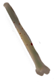
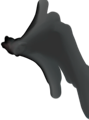
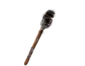
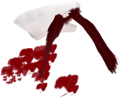
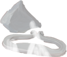

| Объект | Экран | Где показывается | Что запускает | Простыми словами |
|---|---|---|---|---|
 bonny_1строка 80 | tash_pen | Тропинка, где сидит Таш less_tashroad_tash (:1003) | клик: bonny_1_osm (script3_nazad.rpy:1899)осмотреть: bonny_1_osm (script3_nazad.rpy:1899) | Кучка костей на дорожке у Таша. Осмотр (bonny_1_osm, script3_nazad.rpy:1899): «маленький клад», неясно, чья собака оставила столько костей. Перетаскивание на Таша запускает bonny_1_tash: героиня говорит про «суповой набор», Таш определяет, что это человеческие кости, они кажутся ему знакомыми, и просит отдать. Меню: 1) «Окей, забирай»: Таш благодарит, настроение +1, кости пропадают из инвентаря, он просит приносить, если героиня найдёт ещё. 2) «Э-э-э... Нет»: «Моё», Таш соглашается. 3) «А зачем?» (один раз, пока нет vd1.d6): Таш хочет посмотреть, вдруг вспомнит, откуда они; кости надо сначала почистить; меню повторяется. После выбора Таш убирается с экрана. |
tashстрока 107 | tash_pen | Тропинка, где сидит Таш less_tashroad_tash (:1003) | Это персонаж: Ташир (Таш). Где на него нажать и что на него можно положить, на его странице. | |
tash_cardsстрока 143 | tash_pen | Тропинка, где сидит Таш less_tashroad_tash (:1003) | клик: tash_cards_osm (script3_nazad.rpy:1741)осмотреть: tash_cards_osm (script3_nazad.rpy:1741)взять: tash_card_keep (script3_nazad.rpy:1765) | Карты Таша на пеньке (tash_cards_osm, script3_nazad.rpy:1741). Выборов в осмотре нет: героиня смотрит на карты, появляется рука и карта с совой, она «шевелится» и «смотрит прямо на меня», после чего всё скрывается. Отдельное действие «взять» (tash_card_keep, script3_nazad.rpy:1765): героиня переворачивает карту, на ней ничего нет, и она попадает в инвентарь (предмет «tash_card»). |
 mantстрока 173 | tash_pen | Тропинка, где сидит Таш less_tashroad_tash (:1003) | клик: mant_osm (script3_nazad.rpy:1948) | Край мантии Таша, зацепившийся за сучок (mant_osm, script3_nazad.rpy:1948). Героиня думает: «Одно неосторожное движение и…» и выбирает из трёх вариантов. 1) «Осторожно снять с сучка»: мантия отходит идеально ровно, Таш спрашивает, что не так; героиня удивляется, что он не переживает за мантию, а он отвечает «Она же ничего не чувствует! Я проверял!»; настроение Таша +1, ставится флаг vd1.d7. 2) «ПОРВАТЬ»: героиня наступает на мантию, падает вперёд, ветка ломается, Таш язвит «Прилегла?», героиня огрызается и с трудом встаёт; настроение и флаги в этой ветке не меняются. 3) «Отойти»: ставится флаг vd1.d7, героиня говорит, что ей нет дела до чужих мантий. |
 barier_dragстрока 205 | barier_screen | Барьер less_up_barier (:58) | клик: osm_barier (script3_road.rpy:103)осмотреть: osm_barier (script3_road.rpy:103) | Барьер на дороге (barier_drag, script_npc_items.rpy:204; экран показывается на локации Барьер less_up_barier). У объекта два взаимодействия. 1. Осмотреть (osm_barier, script3_road.rpy:103): выборов нет, героиня проводит рукой («Тепленький»), видит зелёные деревья сзади, но барьер твёрдый, пройти нельзя. 2. Идти на барьер (less_up_barier_label, script3_road.rpy:112): героиня «резко уткнулась в него головой», звук падения. Первый удар даёт +1 к безумию (sanity.add_mad), счётчик elfs_krug растёт на 1. Если рядом Таш (tash.near) и ещё не было реплики (td2.d10), он объясняет, что барьер поставили эльфы из-за разнесённой рощи, а героиня в розыске («Ты же там в розыске»); запись в дневник (viy_quest, часть 9). Начиная с четвёртого удара (elfs_krug >= 4) барьер бьёт магией: эффект крови, blood +1 за каждый такой удар. Когда blood достигает 3 (setblood, script.rpy:247), запускается sm_blood (script_1_less_hand.rpy:358): героиня падает без сознания. Исходы: если Таш рядом и обещал помочь (tash.helpp), он лечит её и убегает; если героиня на одной локации с Лесс или в «Тёмной Гавани» и Лесс расположен (less.mood >= 5 или less.good) и не было ld1.d6, идёт ветка nesm (Лесс подхватывает корнями); иначе концовка BAD END «Слишком много крови...» и перезапуск. Значит, об барьер убиться можно, но не с первых ударов: нужно накопить 3 единицы blood (blood могут давать и другие сцены, поэтому смерть может прийти и раньше четвёртого-пятого удара). Перетаскивание предметов на барьер описано отдельно. |
bonnyстрока 225 | barier_screen | Барьер less_up_barier (:58) | Это персонаж: Бонни. Где на него нажать и что на него можно положить, на его странице. | |
 facelстрока 280 | less_per_screen | Перекрёсток less_per (:49) | клик: facel_action_osm (script_3_less_end.rpy:232) | Факел на земле в лесу. Осмотр: «Самый настоящий факел! Такие горят долго», но им уже кто-то пользовался. Дальше героиня решает, брать ли его (см. предмет «facel»). |
b_headстрока 313 | less_per_screen | Перекрёсток less_per (:49) | клик: bonny_lock (script_npc_items.rpy:1564) | Голова Бонни на локации (bonny_lock, script_npc_items.rpy:1564). Выборов в самой метке нет, проверяется квест Бонни: если в его заметках ещё нет «make1», тратится 1 игровой час, место меняется на Место с костями Бонни less_bonny, прячется нижняя панель и запускается пазл (start_puzzle); если «make1» уже есть, также тратится 1 час и открывается та же локация, но без пазла. Сам пазл здесь не разобран. |
 cloath_vстрока 347 | less_per_screen | Перекрёсток less_per (:49) | клик: script_3_less_cloath_bint (script_npc_items.rpy:1837), script_3_less_cloath (метки нет в найденных файлах), script_3_less_cloath_empty (script_npc_items.rpy:1828)осмотреть: cloath_action_osm (script_3_less_end.rpy:286)взять: keep_cloath (script_3_less_end.rpy:307) | Ветка с тряпкой на локации (cloath_v, script_npc_items.rpy:347). Пока тряпка не взята, осмотр показывает её (cloath_action_osm), и её можно взять (keep_cloath, предмет «cloath»). Когда тряпка уже взята и героиня приносит её обратно (cloath_cloath_v): «Ума не приложу, зачем мне перевязывать дерево, но это возможно». Меню: «Перевязать» (тряпка прислоняется к ветке и закрепляется, предмет пропадает из инвентаря, метка «bint», настроение Лесс +2, ветка выглядит лучше) или «Нахрен надо» (оставить себе). Если ветку осмотреть без тряпки (script_3_less_cloath_empty): «просто сломанная веточка», но по краю ползёт алая капля, «у неё идёт кровь». После перевязки (script_3_less_cloath_bint): «Мы перевязали деревце. По крайней мере, ему явно лучше». |
sovaстрока 413 | less_per_screen | Перекрёсток less_per (:49) | Это персонаж: Сова. Где на него нажать и что на него можно положить, на его странице. | |
less_spalстрока 459 | less_ter | Место пробуждения less_start (:51) | клик: script_1_less_spal (script_1_less_begin.rpy:322) | Куча корней, под которой что-то есть (script_1_less_spal, script_1_less_begin.rpy:322). Героиня не может убрать их руками; в квесте «viy_quest» открывается «spal0». Если в памяти уже есть «korn» (спальники и остатки костра): когда запись «spal» ещё не открыта, она замечает странности (кожа спальников подгнила, но нет ни листочка, ни следов зверья), чувствует место «для ещё одного» и её накрывает видение. Выбор: 1) «Бороться с наваждением»: безумие −2, героиня возвращается в себя. 2) «Поддаться потоку»: запись «spal2», видение: двое высших эльфов, один из них Риал, допрашивают девушку (кинжал у горла, «Мёртвые глаза»), она отвечает «Я вам ничего не скажу», им велено завтра отвести её во дворец; видение обрывается, у героини идёт кровь (blood + 1). При повторном осмотре она говорит, что мешки лежат очень давно, а если есть «spal2», то «то, что я помню, произошло явно не вчера». Кто эта девушка, в сцене не названо. Можно ли убрать корни. Руками нельзя: об этом прямо говорит героиня. Убрать их может только Лесс, в разговоре с ним (day_1_less_razg.rpy:52, пункт «А можешь убрать корни там где мы встретились?»). Пункт появляется, если в памяти «viy_quest» есть «spal0» (то есть корни уже осматривали) и ещё нет «korn». Если настроение Лесс выше 4 (less.mood > 4): он убирает их сразу («Уже сделал»), открывается «korn», и после этого осмотр даёт описанную выше сцену про спальники и видение. Если настроение 4 или ниже: он отвечает «Могу, конечно. Но зачем бы мне это делать?», корни остаются. Итог: убрать можно, но только через Лесс и при его настроении выше 4; без этого осмотр спальников дальше «руками не убрать» не идёт. Это проверено по коду; доступность в текущей сборке демо по экранам не проверялась запуском игры. Сами спальники. Убрать или взять сами спальники в коде нельзя: ни предмета, ни метки для этого нет. Убираются только корни: когда «korn» записан, картинка корней на локации (korn_spal, script_npc_items.rpy:473) больше не рисуется, спальники остаются, и клик по ним ведёт на тот же осмотр. Достижимость: пункт про корни стоит в меню разговора с Лессом (less_razg_menu, day_1_less_razg.rpy), в которое по коду возвращаются разные ветки разговора (script_2_less_conv.rpy:402, 653, 849). Это проверено чтением, прохождением демо не проверено. |
less_osmстрока 496 | less_ter | Место пробуждения less_start (:51) | клик: start_osm1 (script_1_less_begin.rpy:190)осмотреть: start_osm1 (script_1_less_begin.rpy:190) | Осмотр окрестностей в самом начале (start_osm1, script_1_less_begin.rpy:190). Выборов нет, логика +1. Героиня осматривается, но в темноте не видит и носа («будто кто-то нажал на рубильник, а включить обратно забыл»), воздух неожиданно свежий и холодный, есть знакомый аромат («дежавю»). Она проводит ладонью по земле: трава колючая, как из иголок, «Ого, да я в лесу!». Потом героиня начинает различать окрестности в темноте (время суток переключается на «sumer») и удивляется: «разве люди так умеют?». |
hand_bloodстрока 529 | less_ter | Место пробуждения less_start (:51) | клик: script_1_hand_blood (script_1_less_begin.rpy:528) | Кровавый отпечаток на дереве (script_1_hand_blood, script_1_less_begin.rpy:528). Выборов нет, реплики зависят от логики и безумия. Высокая логика: героиня подходит, по спине холодок, «настоящий кровавый отпечаток». Высокое безумие: «креативный дизайн для унылого леса», такой бы она повесила у себя дома. Иначе (безумия мало): «Бр-р-р», ей не хочется думать, что здесь произошло; «индекс дружелюбности места в глубоком минусе: нас здесь не ждут. Или, наоборот, ждут слишком старательно». |
 kremenстрока 559 | less_ter | Место пробуждения less_start (:51) | клик: kremen_action_osm (script_1_less_begin.rpy:553)осмотреть: kremen_action_osm (script_1_less_begin.rpy:553) | Кремень и кресало (kremen_action_osm, script_1_less_begin.rpy:553). Выборов нет, результат зависит от логики. Высокая логика: «кремень и кресало», сбоку гравировка «Р, Д, С» (инициалы мастера или владельца?); описание предмета меняется на «…найденные в Лесу. На них есть небольшая гравировка - РДС»; если факел уже в инвентаре, героиня вспоминает эту аббревиатуру на факеле. Низкая логика: «невзрачный серый камушек», описание предмета «Какой-то невзрачный серый камушек?», при высоком безумии «Прикольный камушек» (на полочку для уюта); иначе она называет его «экологическим мусором». |
less_terстрока 587 | less_ter | Место пробуждения less_start (:51) | клик: script_1_less_tabl (script_1_less_begin.rpy:286) | Табличка «Территория Лесса» на экране начала (script_1_less_tabl, script_1_less_begin.rpy:286). Героиня читает её: если Лесс уже назвал имя (less.zn_name), она говорит «Мило» (или «Он всё же это сделал», если в памяти есть «tabl»), иначе гадает, не «Леса» ли это и кто такой Лесс; осмотр записывается как «tabl_osm». Затем выбор: 1) «Взять с собой»: героиня дёргает табличку, звук укуса, один из корешков хлещет её наискось, эффект крови на экране; героиня: «Это не просто кусок дерева! Оно отбивается!». В коде этой ветки нет ни уменьшения здоровья, ни прибавки к blood (используется только экранный эффект blood_effect), предмета табличка не даёт. 2) «Оставить на месте»: героиня отворачивается, «Зачем мне с собой этот кусок дерева?». Так что «урон» здесь виден только как эффект и реплика; счётчик кровопотери от таблички не растёт (проверено по коду). |
dev_door2строка 617 | dev_door_screen2 | Дом Луизы (Элеона Ара) airat_luiza_house (:47) | нет действия по клику в коде (можно только перетащить предмет) | Дверь внутри дома Луизы (dev_door2, экран dev_door_screen2, script_npc_items.rpy:615). По клику (если не идёт разговор) героиня выходит из дома: место меняется на «Новый Айрат: левая улица (дом Луизы)» (Новый Айрат: левая улица (дом Луизы) airat_left), где снаружи дверь дома. Осмотра, меню и текста у этой двери нет. Выход действует из комнаты «Дом Луизы (Элеона Ара)». Кроме клика, на неё можно перетащить предмет. |
dev_doorстрока 640 | dev_door_screen | Новый Айрат: левая улица (дом Луизы) airat_left (:45) | клик: dev_door_label (script_4_airat.rpy:1482)осмотреть: dev_door_osm2 (script_4_airat.rpy:1530) | Дверь дома в Айрате (dev_door_label, script_4_airat.rpy:1482). Героиня говорит «Эт дверь... И что мне с ней делать?». Меню: 1) «Войти» (доступно, только если Луиза рядом, dev.near): переход в дом Луизы (airat_house_luiza). 2) «Постучаться» (доступно, если Луизы рядом нет): звучит стук. Если Луиза в доме (dev.lock == airat_luiza_house) и ранее были ссоры (флаги вроде «after_airat_bad», «to_airat_bad», «luiza_left_quarrel»), героиню прогоняют: «Уходите! Я занята!»; если Феня ранена (fenya_rana), она просит помощи, Луиза пускает только её, через несколько минут Феня выходит перевязанной (rana = 1, метка «fenya_bint»). Если ссор не было, героиня попадает в дом. Если Луизы в доме нет: «Тишина и пустота. Бесполезное занятие». 3) «Конец»: выход. Отдельный осмотр двери (dev_door_osm2): «Самый обычный дом», табличка «Элеон Ар»; внутри кто-то есть, если Луиза дома, иначе тишина. |
dev_sleepстрока 680 | dev_sleep_screen | Дорога, где спит Луиза less_left_dev_road, ночью или в сумерки, пока Луиза не встречена (:62) | Это персонаж: Луиза. Где на него нажать и что на него можно положить, на его странице. | |
dev_buttonстрока 714 | dev_screen | локация, где стоит Луиза (:56) | Это персонаж: Луиза. Где на него нажать и что на него можно положить, на его странице. | |
girl_airстрока 739 | girl_air_screen | локация, где стоит девочка girl_air (:39) | Это персонаж: Девушка в церкви Айрата. Где на него нажать и что на него можно положить, на его странице. | |
catстрока 772 | cat_screen | Статуя кошки airat_cat (:60) | Это персонаж: Статуя кошки. Где на него нажать и что на него можно положить, на его странице. | |
leniстрока 804 | leni_air_screen | локация, где стоит Лени (:41) | Это персонаж: Лени. Где на него нажать и что на него можно положить, на его странице. | |
kar_airстрока 836 | kar_door_screen | Коридор церкви airat_church_corridor (:43) | клик: airat_church_corridor_door (script_4_airat.rpy:515) | Дверь в коридоре церкви (airat_church_corridor_door, script_4_airat.rpy:515). Меню повторяется, пока не выбрать «Конец». 1) «Потянуть на себя»: дверь не открывается («сохранила полное безразличие»); при высокой логике героиня думает, что разговор с дверью ещё ничего не значит, «вот если бы она ответила»; при высоком безумии думает, не блеснула ли дверь. 2) «Постучаться»: звучит стук; если Лени стоит в комнате Карралака (leni.lock == airat_church_kar), сцена переходит к airat_church_corridor_arrows_up_next_label (там что-то открывается, подробно не разобрано), иначе «Тишина, никого нет дома». 3) «Конец»: выход. |
narsстрока 921 | nar_screen | Бар Нарси bar_nar (script_newscreens.rpy:314) | Это персонаж: Нарси. Где на него нажать и что на него можно положить, на его странице. | |
guard1строка 947 | airat_guards_drag | Комната стражи airat_guards (script_npc_items.rpy:37) | Это персонаж: Горран (старший страж). Где на него нажать и что на него можно положить, на его странице. | |
guard2строка 976 | airat_guards_drag | Комната стражи airat_guards (script_npc_items.rpy:37) | Это персонаж: Алекс (страж). Где на него нажать и что на него можно положить, на его странице. | |
cap_chстрока 1005 | airat_guards_drag | Комната стражи airat_guards (script_npc_items.rpy:37) | клик: look_cap (script_5_airat.rpy:759)осмотреть: look_cap (script_5_airat.rpy:759)взять: keep_cap (script_5_airat.rpy:782) | Чайник у стражников (look_cap, script_5_airat.rpy:759). Выборов нет: из чайника поднимается запах трав с мёдом, второй стражник (Алекс) недовольно косится на старшего, героиня думает: «Милый старичок пьёт чай прямо на рабочем месте. А где он воду берёт?». Выпить чай и получить кружку можно в другой сцене (tea, см. предметы «tea» и «cap»), не здесь. |
kapстрока 1052 | airat_kap_drag | Кафе «Кап» airat_kap (script_newscreens.rpy:310) | Это персонаж: Капибара. Где на него нажать и что на него можно положить, на его странице. | |
kapстрока 1064 | airat_kap_drag | Кафе «Кап» airat_kap (script_newscreens.rpy:310) | Это персонаж: Капибара. Где на него нажать и что на него можно положить, на его странице. | |
gub_osmстрока 1148 | gubert_screen | Заросли со слизнем Губертом less_slime (:994) | клик: start_gub_osm (script3_gubert.rpy:420)осмотреть: start_gub_osm (script3_gubert.rpy:420) | Стена из змеистых веток на дороге слизня (start_gub_osm, script3_gubert.rpy:420). Вариантов выбора нет: героиня говорит, что между ветками пролезть можно, «если жизни не жалко», проводит рукой, ветка тёплая; делает вывод: «Чтобы тут пройти, нужно что-то больше, чем мои лапки». Сцена заканчивается возвратом на экран локации. |
bonny_xстрока 1342 | bonny_screen_drag | Место с костями Бонни less_bonny (:54) | клик: osm_bonny_x (script_npc_items.rpy:1300) | Нацарапанный крестик на экране пазла Бонни. Осмотр: героиня говорит «жирно нарисованный крестик, он явно постарался» и хочет понять, что с ним делать. Что крестик означает для пазла, в этой сцене не сказано: известен только текст осмотра. |
full_bonesстрока 1369 | bonny_screen | Место с костями Бонни less_bonny (:1001) | клик: osm_bonny (script_npc_items.rpy:1286) | Скелет Бонни в пазле. Осмотр: оно «только что сбило череп», героиня удивляется подвижности и замечает, что оно что-то нацарапало, причём почерк «так себе»; запоминается в bd1 как «osm_bonny». |
bonny_xстрока 1388 | bonny_screen | Место с костями Бонни less_bonny (:1001) | клик: osm_bonny_x (script_npc_items.rpy:1300) | Нацарапанный крестик на экране пазла Бонни. Осмотр: героиня говорит «жирно нарисованный крестик, он явно постарался» и хочет понять, что с ним делать. Что крестик означает для пазла, в этой сцене не сказано: известен только текст осмотра. |
b_findстрока 1412 | bonny_screen | Место с костями Бонни less_bonny (:1001) | клик: osm_b_find (script_npc_items.rpy:1277) | Надпись «Найди мой череп» в пазле Бонни. Осмотр: героиня недоумевает («А этот-то тебе чем не зашёл?»), стучит пальцем, понимает, что её не слышат, и спрашивает себя, о чём речь. |
headстрока 1436 | bonny_screen | Место с костями Бонни less_bonny (:1001) | клик: osm_head (script_npc_items.rpy:1307) | Череп на экране пазла Бонни. Осмотр: жёлтоватый, довольно целый, лежит недавно; при высокой логике героиня замечает, что он «будто немного другой» и на нём нет мха. |
bone_strangeстрока 1463 | bonny_screen | Место с костями Бонни less_bonny (:1001) | нет действия по клику в коде (можно только перетащить предмет) | Странные кости на экране пазла Бонни. Клика нет: известно только, что на объект можно перетащить предмет (см. «bones_strange»). |
fon_vnстрока 1483 | bonny_screen | Место с костями Бонни less_bonny (:1001) | нет действия по клику в коде (можно только перетащить предмет) | Фон экрана пазла Бонни. Клика нет: известно только, что на него можно перетащить предмет. |
lupa_button | bg_screen | Дом Луизы (Элеона Ара) airat_luiza_house (script_newscreens.rpy:998) | кнопка-лупа: осмотр дома: airat_house_priest_menu (script_4_airat.rpy:1769) | Кнопка-лупа в доме Луизы (airat_house_priest_menu, script_4_airat.rpy:1769). Меню повторяется, пока не выбрать «Закончить осмотр». 1) «Осмотреть записку»: героиня замечает среди вещей жреца зашифрованную записку на гербовой бумаге, судя по бумаге - от Церкви; в квесте «quest_find_priest» добавляется заметка «node». 2) «Осмотреть медицинские вещи»: небольшая аптечка (пластыри, лекарства, зелье лечения, простые бинты, обезболивающее); в «quest_find_doc» заметка «medicine». 3) «Осмотреть странную аптечку»: чёрная аптечка со стандартным набором и экстренными вещами (жгут, обезболивающее, бинты), несколько бутыльков (героиня гадает: антидоты?) и свитки защиты, работающие как защитный барьер; героиня удивляется, откуда это помнит; заметка «medicine2». 4) «Закончить осмотр»: возврат на экран локации. |
adro_screen | adro_screen | показывается из script.rpy:546 и script_4_tgavan_adro.rpy:88, 538 | Это персонаж: Адро. Где на него нажать и что на него можно положить, на его странице. | |
blu | blu | показывается из script3_gubert.rpy:383 | Это персонаж: Блу. Где на него нажать и что на него можно положить, на его странице. |
Объекты Капибара (airat_kap_drag) и nars (nar_screen): у них в коде нет действия по клику, только перетаскивание предметов. Метки со ссылкой ведут на страницу сцены, где эта история лежит.